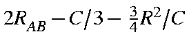

Quantum effects arising from the overlaps of atomic orbitals can extend to a distance of a few tens of Ångstroms. However, the overlaps themselves become negligible at distances of only a few Ångstroms. Overlap integrals decrease in value at large distances in proportion to the inverse exponential of their orbital exponents. Because of this fact, all overlap integrals involving atoms separated by more than a specified distance can be ignored. In practice, a limit of 5-7Å should be used. One advantage of limiting overlap integrals is that the calculation runs much faster. A diamond calculation involving 64 carbon atoms took 31 minutes to do one SCF calculation. When overlaps involving atoms separated by more than 7 Ångstroms were ignored, the calculation took less than 3 minutes.
Electrostatic terms are more difficult to approximate. Unlike quantum effects, electrostatic terms remain significant even at quite large distances, say several tens of Ångstroms. Simply ignoring all terms beyond a specific distance results in large errors. Consider a simple two-dimensional ionic lattice consisting of alternating positive and negative charges in a square array (Figure). Each positive ion is surrounded at a distance r by four negative ions, and at a distance 21/2r by four positive ions. If all electrostatic interactions at distances greater than a preset value are ignored, then each positive ion will experience an electrostatic field due to 4 or 8 more or less positive ions than negative ions. Consider first the effect of 4 excess positive ions. Because of electrostatic repulsion, these ions would raise the energy of the ion by 1328/R kcal/mol, where R was the cutoff-distance for electrostatic interactions. Similarly, if there were 4 excess negative ions, each positive ion would be stabilized by 1328/R kcal/mol. Even for large R, say 20 Ångstroms, the effect would amount to many tens of kcal/mol.
One option would be to include all interactions in a finite set of fundamental unit cells. Since each unit cell is, by definition, electrically neutral, this would result in each ion experiencing a field arising from all other ions. The sum of the charges on all the ions each ion would experience would be simply equal to the negative of the ion's own charge. Consider a cell consisting of 2A(+).2B(-), in which the four ions form a square with alternating charges, e.g. A(+)-B(-)-A(+)-B(-). If 9 cells, forming a 3 by 3 grid, were used to represent the solid, then ion A(+) would experience the environment of 17 A(+) ions and 18 B(-) ions. This is similar to the situation which occurs in a molecule.
This approximation is acceptable for polymer systems, but it can induce a small error in the symmetry of the electric field in a two-dimensional system. Consider the electric field on the ions A(+) and B(-) in our system. Each ion would experience an electrostatic environment which did not have square symmetry. To see this, consider the number of B(-) ions the A(+) ion would interact with, 18 in all. It is clearly impossible to position 18 B(-) ions in such a way as to yield a potential having square symmetry at ion A(+).
For a three dimensional system, the problem is much more serious. For a unit cell consisting of A(+)-B(-), every "A" ion would experience a highly asymmetric potential. Increasing the number of unit cells involved does not solve the problem--with increasing numbers of unit cells, the effects arising from distant ions becomes less, but the number of distant ions increases. Put another way, the influence of an ion falls off as r-2, but the number of such ions increases as r2. This phenomenon is peculiar to 3-D systems.
To correct this error in the symmetry of the potential, a new approximation is needed, in which the environment of each ion has the correct symmetry. In addition to having the correct symmetry, the function must have a continuous first derivative, in order for the derivatives to be calculable.
A cutof distance is selected, this is called CUTOFP; by default this is set at 30 Ångstroms. The electrostatic terms arising from all atoms up to 2/3CUTOFP are treated as normal. Between 2/3CUTOFP and 4/3CUTOFP, the apparent distance of the atom is reduced, and for atoms separated by more than CUTOFP, the apparent distance is set to CUTOFP. These three domains can be summarized as follows:
| Domain | Apparent Distance* |
| RAB < (2/3)C | RAB |
| (2/3)C <RAB < (4/3)C |  |
| RAB > (4/3)C | C |
Inspection of this function shows that in the region of R=(2/3)CUTOFP, the function value is (2/3)CUTOFP and the derivative is 1.0. In the region R=(4/3)CUTOFP the function has the value CUTOFP, and has a derivative of zero. In between these two limits, the value of the derivative decreases smoothly from 1.0 to 0.0.